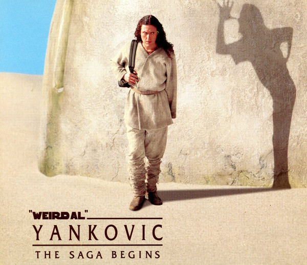

"The Saga Begins" é uma canção paródica de "Weird Al" Yankovic que parodia "American Pie", de Don McLean, apresentando de forma bem-humorada um resumo da trama do filme Star Wars: Episódio I – A Ameaça Fantasma através do ponto de vista de Obi-Wan Kenobi, um dos protagonistas do filme.
O título da música, que não é mencionado na letra, foi inspirado no slogan "Every saga has a beginning", presente nos trailers de divulgação e no pôster de A Ameaça Fantasma. A música foi lançada como single em 1999, como parte da divulgação do álbum Running with Scissors, e posteriormente também apareceu em uma coletânea intitulada The Saga Begins.
A música foi lançada apenas algumas semanas depois da estreia do filme, que era um dos lançamentos cinematográficos mais aguardados da época. Al afirma que escreveu a canção originalmente com base apenas em rumores encontrados na internet sobre o enredo do filme.
Para garantir que a letra estivesse correta, ele participou de uma sessão especial de pré-estreia do filme. Apesar da crença popular de que a música teria sido escrita inteiramente com base nos rumores e acertado a história de forma surpreendente, Al precisou fazer várias alterações importantes na letra depois de assistir ao filme. Don McLean, compositor de "American Pie", já declarou que algumas partes da letra da paródia acabam surgindo em sua cabeça quando ele apresenta sua música original ao vivo.
Quando "The Saga Begins" era tocada pela Radio Disney, a emissora censurava o trecho "Do you see him hitting on the Queen" simplesmente removendo-o da música. Al considerou que essa edição soava muito ruim e, por isso, lançou uma versão alternativa na qual o trecho foi substituído por "Do you see him talking to the Queen".
O videoclipe de "The Saga Begins" foi gravado em dois ambientes bastante diferentes. As cenas de abertura e encerramento foram filmadas sob o intenso calor do deserto de Mojave, enquanto as cenas ambientadas na cantina foram gravadas em um estúdio com ar-condicionado. A música foi gravada em 20 de abril de 1999, mesma data em que ocorreu o massacre de Columbine. "The Saga Begins" tem duração total de 5 minutos e 27 segundos.
A long, long time ago
In a galaxy far away
Naboo was under an attack
And I thought me and Qui-Gon Jinn
Could talk the Federation in-
To maybe cutting them a little slack
But their response, it didn't thrill us
They locked the doors and tried to kill us
We escaped from that gas
Then met Jar Jar and Boss Nass
We took a bongo from the scene
And we went to Theed to see the queen
We all wound up on Tatooine
That's where we found this boy...
Oh my my, this here Anakin guy
Maybe Vader someday later - now he's just a small fry
And he left his home and kissed his mommy goodbye
Sayin' "Soon I'm gonna be a Jedi"
"Soon I'm gonna be a Jedi"
Did you know this junkyard slave
Isn't even old enough to shave
But he can use the Force, they say
Ahh, do you see him hitting on the queen
Though he's just nine and she's fourteen
Yeah, he's probably gonna marry her someday
Well, I know he built C-3PO
And I've heard how fast his pod can go
And we were broke, it's true
So we made a wager or two
He was a prepubescent flyin' ace
And the minute Jabba started off that race
Well, I knew who would win first place
Oh yes, it was our boy
We started singin'...
My my, this here Anakin guy
Maybe Vader someday later - now he's just a small fry
And he left his home and kissed his mommy goodbye
Sayin' "Soon I'm gonna be a Jedi"
"Soon I'm gonna be a Jedi"
Now we finally got to Coruscant
The Jedi Council we knew would want
To see how good the boy could be
So we took him there and we told the tale
How his midi-chlorians were off the scale
And he might fulfill that prophecy
Oh, the Council was impressed, of course
Could he bring balance to the Force?
They interviewed the kid
Oh, training they forbid
Because Yoda sensed in him much fear
And Qui-Gon said, "Now listen here
Just stick it in your pointy ear
I still will teach this boy"
He was singin'...
My my, this here Anakin guy
Maybe Vader someday later - now he's just a small fry
And he left his home and kissed his mommy goodbye
Sayin' "Soon I'm gonna be a Jedi"
"Soon I'm gonna be a Jedi"
We caught a ride back to Naboo
'Cause Queen Amidala wanted to
I frankly would've liked to stay
We all fought in that epic war
And it wasn't long at all before
Little Hotshot flew his plane and saved the day
And in the end some Gungans died
Some ships blew up and some pilots fried
A lot of folks were croakin'
The battle droids were broken
And the Jedi I admire most
Met up with Darth Maul and now he's toast
Well, I'm still here and he's a ghost
I guess I'll train this boy
And I was singin'...
My my, this here Anakin guy
Maybe Vader some day later - now he's just a small fry
And he left his home and kissed his mommy goodbye
Sayin' "Soon I'm gonna be a Jedi"
"Soon I'm gonna be a Jedi"
We were singin'...
My my, this here Anakin guy
Maybe Vader some day later, now he's just a small fry
And he left his home and kissed his mommy goodbye
Sayin' "Soon I'm gonna be a Jedi"